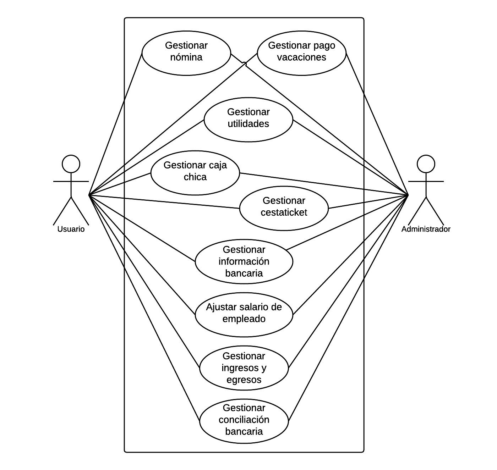

DESARROLLO DEL MÓDULO WEB DE NÓMINA, INGRESOS Y EGRESOS PARA LA EMPRESA CENTROVENEZOLANO C.A.
Autor:
Tlgo. Leonett Daniel
¿Qué es CentroVenezolano C.A.?
SITUACIÓN PROBLEMA
- Proceso de nómina y registro de los ingresos y egresos en hojas de cálculo.
- Hojas de cálculo genéricas.
- Mayor automatización de la información.
- Permitir la centralización y disponibilidad de la información de forma remota.
OBJETIVOS
OBJETIVO GENERAL
Desarrollar el módulo web de nómina, ingresos y egresos para la empresa Centrovenezolano C.A.
OBJETIVOS ESPECÍFICOS
- Evaluar los requerimientos del módulo de nómina, ingresos y egresos.
- Diseñar el módulo de nómina, ingresos y egresos.
- Desarrollar las funcionalidades del módulo de nómina, ingresos y egresos.
- Realizar pruebas de funcionamiento para el módulo propuesto.
- Implantar el módulo propuesto en la empresa.
MÉTODOS, TÉCNICAS Y/O PROCEDIMIENTOS APLICADOS
Programación extrema (XP)
- Cambios durante el desarrollo.
- Iteraciones.
Valores de XP
- Desarrollo iterativo e incremental.
- Pruebas unitarias continuas.
- Programación en parejas.
- Integración del equipo de programación con el cliente.
- Simplicidad en el código.
Roles de XP
- Programador
- Cliente
- Tester
- Tracker
- Entrenador
- Consultor
- Gestor
Ciclo de vida de XP
- Fase I: Exploración
- Fase II: Planificación de la entrega
- Fase III: Iteraciones
- Fase IV: Producción
- Fase V: Mantenimiento
- Fase VI: Muerte del proyecto
Implementación de XP
Roles
- Programador: Pasante
- Cliente: Personal directivo y administrativo
- Tester: Gerente de sistemas y vicepresidente de Centrovenezolano C.A.
- Entrenador y Tracker: Gerente de sistemas
- Consultor: Analistas de sistemas
- Gestor: Vicepresidente
Ciclo de vida
Ciclo de vida
Fase I: Exploración
- Calcular el pago de nómina por mes por empleado.
- Calcular el pago de cesta ticket.
- Calcular el pago de utilidades.
- Calcular el pago de vacaciones.
- Buscar pagos por empleados y por fechas.
- Generar reporte de listado de nómina.
- Registrar conciliación bancaria.
- Registrar ingresos y egresos.
- Registrar pago de caja chica.
- Generar reporte de ingresos y egresos.
Ciclo de vida
Fase I: Exploración
Arquitectura
Ciclo de vida
Fase II: Planificación
Ciclo de vida
Fase III: Iteraciones
Ciclo de vida
Fase IV: Producción
Ciclo de vida
Fase V: Mantenimiento
Ciclo de vida
Fase VI: Muerte del proyecto
Resultados obtenidos
Casos de uso
Modelo relacional
Modelo relacional
Vistas del sistema
Principal
Listado de nóminas
Detalle de nómina
Utilidades

Listado de caja chica
Detalle de caja chica
Listado de conciliaciones bancarias
Detalle de conciliación bancaria
Listado de ingresos y egresos
Detalle de ingresos y egresos
Facilidades
- Desarrollo de la interfaz de usuario gracias al uso de una plantilla web con componentes predefinidos.
- Conocimiento del framework Javascript AngularJS.
- Buena comunicación con el tutor industrial y el tutor académico.
- Entusiasmo para el aprendizaje de nuevas técnicas y tendencias de programación.
Dificultades
- Inicialmente el desconocimiento del framework Javascript Sails.
Aportes
- Desarrollo del módulo de nómina, ingresos y egresos para CentroVenezolano C.A.
- Introducción del framework AngularJS en la organización para futuros desarrollos.
- Introducción de metodologías ágiles para el desarrollo de sistemas.
- Propiciar una mayor integración del usuario final en el proceso de la construcción del sistema.
Conocimientos adquiridos
- Beneficios de las metodologías de desarrollo ágil como XP.
- Beneficios del uso de frameworks para el desarrollo de sistemas.
- Conceptos del patrón MVC en los frameworks de desarrollo.
- Dominio del framework Bootstrap 3.
- Autenticación de usuarios a través de tokens.
- Dominio del framework AngularJS.
- Manejo básico del framework Sails.
Conclusiones
- Se llevó a cabo el diseño, codificación del sistema y el modelado de la base de datos, a través de diagramas y modelos con los que se realizó la propuesta del sistema.
- Se utilizó el modelo de base de datos del sistema para desarrollar la aplicación web.
- Se realizaron pruebas a nivel de funcionalidad con los usuarios.
- El uso de metodologías ágiles como XP es de gran ayuda para el proceso de desarrollo de software cuando no se tienen bien definidos todos los requerimientos.
Recomendaciones
- Utilizar metodologías de desarrollo ágil para el desarrollo de proyectos futuros.
- Utilizar plantillas web ya que agilizan enormemente la fase de desarrollo del frontend de los sistemas.
- Propiciar el uso de Javascript como lenguaje de servidor para futuros desarrollos, así como el uso del patrón MVC para la estructuración de los mismos.
- Utilizar AngularJS como framework frontend para la creación de aplicaciones web “clientes”.